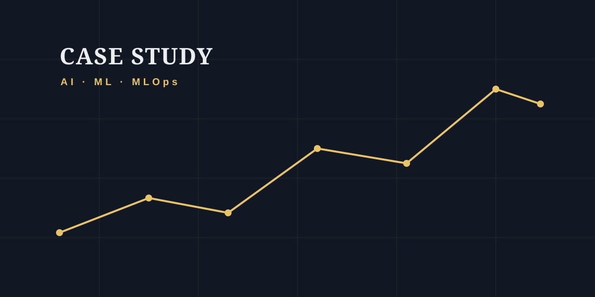

Kaizen — AI-Native Personal Operating System

Overview
Kaizen is an AI-native personal operating system for habits, goals, journaling, and reviews. Its differentiator is an AI Coach that reads and writes the user's real data rather than just chatting about it: a streaming tool-use loop gives the model 12 tools that map onto the exact same service-layer functions the REST API uses, so the agent mutates state through identical, validated code paths as the UI. Built on FastAPI + SQLAlchemy 2.0 with Postgres/pgvector and a Next.js App Router frontend.
Challenges & Solutions
The core problem was making an LLM a trustworthy actor on production data instead of a chat surface bolted onto a CRUD app. That meant binding tools to shared service functions so the agent could not create a divergent write path, grounding the model in real state (dashboard reads before advice, injected current date and timezone so relative dates like "tomorrow at 7am" resolve to correct ISO datetimes), streaming tool activity to the client over SSE so multi-round tool use stays legible, and bounding the agent loop. A second challenge was vendor neutrality: designing one provider interface so Anthropic Claude and OpenAI implement the same streaming contract, plus graceful degradation when no API key is configured at all.
Technical Achievements
- Agentic tool-use loop: 12 tools (create_goal, log_habit, add_journal_entry, generate_review, schedule_event, send_email, and more) dispatched against the same service layer the REST API calls, so the agent writes through validated, non-divergent code paths
- Provider-neutral LLM abstraction: a single stream_agent contract implemented by both an Anthropic provider (streaming with adaptive thinking, preserving thinking and redacted_thinking blocks across tool rounds) and an OpenAI provider (function calling), selected at runtime by a factory from whichever key is present
- Server-Sent Events streaming: tokens and tool invocations are pushed to the chat UI live, so multi-round tool use renders as visible activity instead of a long silent wait
- Prompt grounding for correctness: the system prompt injects the user's real timezone and current datetime so relative scheduling ("tomorrow at 7am") resolves to exact ISO datetimes, and instructs the model to read dashboard state before giving progress advice
- Semantic knowledge search over pgvector with a pluggable embedding backend (Voyage AI or OpenAI, both normalized to 1024 dimensions so the vector column stays provider-agnostic) and automatic keyword fallback
- Natural-language capture: a structured-output LLM call turns one free-form sentence into a typed goal/habit/journal draft returned as strict JSON, surfaced as an editable confirm card
- Bounded, resilient agent execution: iteration-capped tool loop, and every AI path degrades gracefully to a clear message when no API key is configured — the rest of the app stays fully usable
- Google Calendar OAuth (read + write) with tokens encrypted at rest via Fernet, making the Coach schedule-aware and able to create real calendar events
- Full-stack delivery: 14-table relational model, ~7.5k lines across a FastAPI backend and Next.js App Router frontend, Dockerized Postgres + pgvector